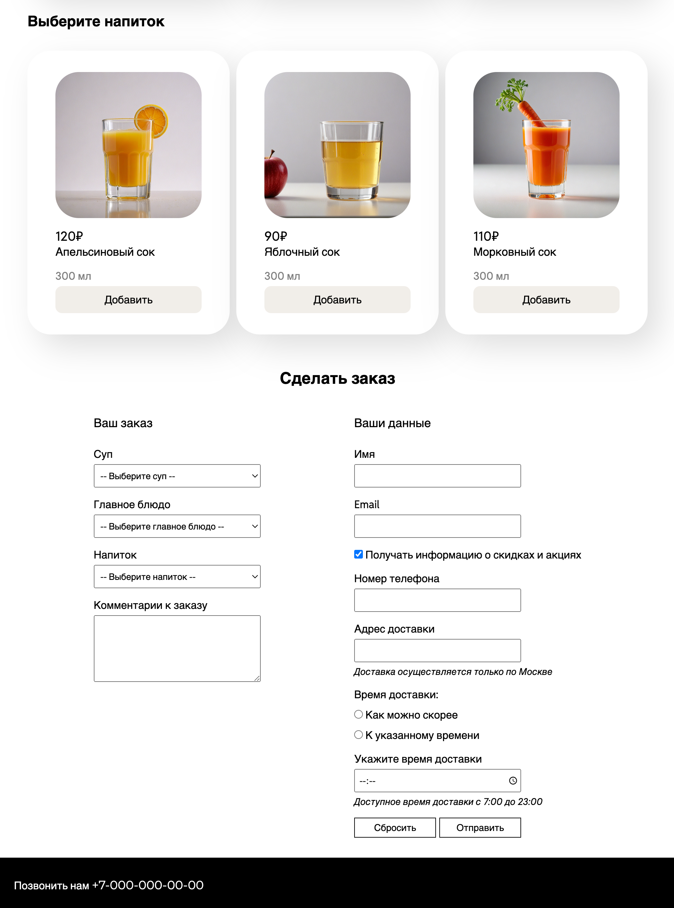

Создайте форму заказа. Форма должна отправляться на https://httpbin.org/post, где должны отобразиться все отправленные значения.
Порядок выполнения
Форма должна располагаться на странице «Собрать ланч» после блока main (блока с информацией обо всех доступных для заказа блюдах). Примерный макет формы:
Полный макет страницы.
HTML
Обязательные элементы, которые должны быть на странице:
- Блок, состоящий из заголовка блока и формы
- Форма должна делиться на два блока:
- Блок с заказом клиента:
- заголовок блока
- label для каждого селекта
- селект для каждого блюда (суп, главное блюдо, напиток)
- label и многострочное текстовое поле для комментария
- Блок с данными клиента:
- заголовок блока
- label и поле для ввода имени
- label и поле для ввода email
- чекбокс и label для выражения согласия на получение информации (подписка на рассылку)
- label и поле для ввода телефона
- label и поле для ввода адреса
- переключатели для выбора времени доставки (radio + label) и подпись к переключателям (fieldset + legend)
- label и поле для указания времени доставки
- кнопка сбросить
- кнопка отправить
Подробные требования к элементам блока с данными клиента:
| Элемент | Тип | Особенности |
|---|---|---|
| Комментарий (textarea) | - | - |
| Имя (input) | text | обязательное для заполнения |
| Email (input) | обязательное для заполнения | |
| Чекбокс для подписки на рассылку (input) | checkbox | По умолчанию выбран (стоит галочка) |
| Телефон (input) | tel | обязательное для заполнения |
| Адрес (input) | text | обязательное для заполнения |
| Выбор времени доставки (input) | radio | обязательное для заполнения |
| Указание времени доставки (input) | time | минимальное время - 07:00 максимальное время - 23:00 шаг изменения времени - 5 минут |
| Кнопка сбросить (button) | reset | Кнопка должна полностью очищать форму |
| Кнопка отправить (button) | submit | Кнопка должна отравлять форму |
Форма должна отправляться методом POST на https://httpbin.org/post
На данной странице httpbin.org должны отобразиться все отправленные данные.
Блок с заказом клиента
У каждого селекта должна быть указана опция по умолчанию с пустым значением value (например, «Выберите
суп»).
У всех остальных опций селектов должно быть указано значение value. Подберите логичное значение
на английском языке, чтобы при
отправке данных его можно было верно понять. Например, для супа Гаспачо value может быть «gaspacho».
Все селекты обязательны для заполнения (форма не должна отправиться, пока в каждом селекте не будет выбрана
опция с заполненным value).
Все label должны быть связаны с select, к которым они относятся.
Блок с данными клиента
Форма не должна отправляться, если хотя бы одно из обязательных полей не заполнено.
Все label должны быть связаны с input/textarea, к которым они относятся.
CSS
Необходимо как можно точнее повторить макет формы:
- разделение на колонки
- размер шрифта для разных элементов
- ширина и высота полей ввода, селектов
- стилизация кнопок
Вы можете использовать дополнительные HTML-элементы и CSS-свойства на своё усмотрение.
Требования
- Все требования из блока HTML должны быть выполнены.
- Все требования из блока CSS должны быть выполнены.
- Код должен быть валиден (не должно быть ошибок в валидаторе https://validator.w3.org).
- Результат должен соответствовать макетам (количество блоков, структура их наполнения).
Размещение сайта
- Сайт должен быть размещен на хостинге. Можно воспользоваться GitHub Pages, Netlify или хостингом Политеха.
- Код сайта должен быть добавлен в репозиторий GitHub.
Итоговый ответ
- В качестве выполненного задания должны быть предоставлены две ссылки:
- Ссылка на сайт, размещенный в Интернете
- Ссылка на репозиторий с кодом на GitHub